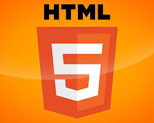

Introdução
>Este site foi desenvolvido como parte de uma atividade de revisão com o objetivo de consolidar os principais conhecimentos adquiridos ao longo das aulas de desenvolvimento web. Ele foi estruturado para funcionar como um guia de estudos interativo e acessível, reunindo de forma clara e prática os conceitos essenciais de HTML, CSS, Git/GitHub e JavaScript — tecnologias fundamentais para qualquer pessoa que esteja iniciando na programação para web. A proposta é permitir que o aluno não apenas revise o conteúdo teórico, mas também coloque em prática as habilidades de codificação, organização de arquivos, controle de versão e publicação de um site. Ao navegar pelas seções deste site, você encontrará resumos explicativos, exemplos reais de código e uma pequena aplicação interativa, tudo feito com base nos aprendizados em sala de aula.
HTML
HTML (HyperText Markup Language) é a linguagem de marcação usada para estruturar e organizar o conteúdo de páginas na web. Com o HTML, podemos definir títulos, parágrafos, listas, links, imagens, tabelas, formulários e muito mais. Ele é a base de qualquer site e funciona como o esqueleto que sustenta todos os elementos visuais.Isso significa que ele marca o conteúdo com tags (ou elementos), que o navegador interpreta para mostrar a página corretamente.
📄 Estrutura básica de um documento HTML
<!DOCTYPE html>
<html lang="pt-br">
<head>
<meta charset="UTF-8">
<title>Título da Página</title>
</head>
<body>
<h1>Bem-vindo!</h1>
<p>Essa é a minha primeira página.</p>
</body>
</html>
🏷️ Principais tags do HTML
<h1> até <h6>: Títulos de diferentes níveis<p>: Parágrafos<a href="">: Links<img src="">: Imagens<ul>, <ol>, <li>: Listas<div>: Contêiner genérico<section>: Seção de conteúdo<form>: Estrutura de formulários<header> (sendo o cabeçalho), <footer> (o rodapé), <main> (o conteúdo principal da página).: Tags semânticas
💡 Dica:
HTML define o que aparece na página, mas não como ele aparece. Para isso, usamos o CSS. E para adicionar comportamento (como cliques ou animações), usamos o JavaScript.

CSS
CSS (Cascading Style Sheets) é a linguagem usada para estilizar elementos HTML. Ele permite definir cores, fontes, tamanhos, espaçamentos, posicionamento e muito mais. Com o CSS, conseguimos transformar uma página simples em algo visualmente bonito e organizado.
Existem três formas principais de aplicar CSS:
- Inline: direto na tag HTML (ex:
<p style="color: red;">) - Interno: dentro da tag
<style>no<head> - Externo: em um arquivo separado (.css) — a forma mais organizada
🎨 Exemplo básico de CSS externo:
/* style.css */
body {
background-color: #f0f0f0; (Fundo)
font-family: Arial, sans-serif; (Fonte)
}
h1 {
color: #2c3e50; (Cor da fonte)
text-align: center; (alinhar no centro)
}
p {
font-size: 16px;
}Para usar esse arquivo, você precisa importar ele no HTML assim:
< link real= "stylesheet" href="style.css">📦 Layout com Flexbox:
Flexbox é uma técnica moderna de layout que facilita a organização dos elementos na tela.
.container {
display: flex;
justify-content: center;
align-items: center;
}🧱 Grid Layout:
outra forma poderosa de organizar o layout é o CSS Grid:
.grid-container{
display: grid;
grid-template-columns: 1fr 1fr;
gap: 20px;
}Git e GitHub
Git é um sistema de controle de versão que permite acompanhar todas as mudanças feitas no seu projeto. Ele registra o histórico dos arquivos, possibilita voltar a versões anteriores e facilita o trabalho em equipe.
Já o GitHub é uma plataforma online onde você pode armazenar seus projetos que usam Git. Ele facilita a colaboração entre desenvolvedores e também permite publicar sites com o GitHub Pages.
📌 Principais comandos do Git:
git init– Inicia um repositório Git na pasta do seu projetogit add .– Adiciona todas as alterações para serem preparadas para o commitgit commit -m "mensagem"– Salva as alterações com uma mensagem descritivagit push– Envia as alterações para o GitHub
🚀 Publicando com GitHub Pages:
Para publicar seu site:
- Suba todos os arquivos do seu projeto no repositório do GitHub
- Vá em Settings > Pages
- Escolha a branch
maine a pasta/root - Seu site estará disponível com um link no formato:
https://seu-usuario.github.io/seu-repo
Usar Git e GitHub ajuda você a manter tudo organizado, seguro e profissional.
JavaScript
JavaScript é uma linguagem de programação essencial para adicionar interatividade e dinamismo às páginas web. Com JavaScript, podemos manipular o conteúdo HTML, responder a eventos do usuário (como cliques do mouse), criar animações, enviar e receber dados de servidores e muito mais.
📜 Manipulação do DOM (Document Object Model):
O DOM representa a estrutura da sua página HTML como uma árvore de objetos. JavaScript permite acessar e modificar esses objetos dinamicamente.
// Exemplo: Alterar o texto de um elemento com o ID "mensagem"
document.getElementById('mensagem').textContent = 'Olá, mundo!';
// Exemplo: Adicionar um novo elemento à página
const novoParagrafo = document.createElement('p');
novoParagrafo.textContent = 'Este é um novo parágrafo criado com JavaScript.';
document.body.appendChild(novoParagrafo);
🖱️ Eventos:
JavaScript permite executar código em resposta a eventos que acontecem no navegador, como cliques, movimentos do mouse, carregamento da página, etc.
// Exemplo: Adicionar um ouvinte de evento de clique a um botão com o ID "meuBotao"
const botao = document.getElementById('meuBotao');
botao.addEventListener('click', function() {
alert('Botão clicado!');
});
✨ Funcionalidade Interativa (Exemplo: Alterar Cor ao Passar o Mouse):
Vamos adicionar um exemplo prático de interatividade. Ao passar o mouse sobre o título "JavaScript", sua cor de fundo mudará.
JavaScript
💡 Dica:
JavaScript é uma linguagem poderosa e versátil, fundamental para o desenvolvimento web moderno. Existem muitos frameworks e bibliotecas (como React, Angular e Vue.js) que facilitam a criação de aplicações web complexas.